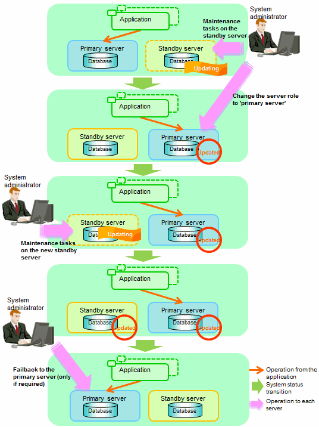

In database multiplexing mode, rolling updates, that perform the maintenance for the servers that comprise the cluster system, can be performed while jobs continue.
First, perform the maintenance for the standby server, and then switch the standby server to the primary server. Then, perform the maintenance for the original primary server that was switched to the standby server. This enables maintenance to be performed while jobs continue.
Note that arbitration server maintenance can be performed without affecting database server operation, so it is not necessary to consider rolling update.
See
If the downtime due to the maintenance of the standby server is expected to be long, refer to "Standby server downtime" in "3.9.1 Changes Required when the Standby Server is Stopped".
The flow of a rolling update is shown below.
Figure 3.1 Performing a Rolling Update

Perform the following procedure as shown in the above figure:
Standby server maintenance tasks
To perform the maintenance on the standby server, stop Mirroring Controller.
Example)
> mc_ctl stop -M D:\mcdir\inst1
Ensure that Mirroring Controller has completely stopped.
If the multiplexed instances and Mirroring Controller have been configured on the standby server to start and stop automatically when the operating system of the database server is started or stopped, cancel the setting to start and stop automatically.
See
Refer to "2.12 Setting Automatic Start and Stop of Mirroring Controller and Multiplexed Instances" for information on how to configure the multiplexed instances and Mirroring Controller to start and stop automatically when the operating system of the database server start and stops.
This task should be performed by the instance administrator user with administrator privileges.
Use the sc config command to disable automatic start of multiplexed instances and Mirroring Controller from the Windows service.
Example)The following is an example using the registered service name "Mirroring_Controller_inst1".
> sc config "Mirroring_Controller_inst1" start= demand
Information
You can use the sc qc command to check the registration status.
Refer to documentation such as Windows Help and Support for the sc command for information on registry content.
Perform maintenance tasks.
Create a copy of the primary server instance on the standby server.
Execute the pg_basebackup command to create data in the standby server by synchronizing with the primary server.
Example)
> pg_basebackup -D D:\database\inst1 -X fetch --waldir=E:\transaction\inst1 --progress --verbose -R --dbname="application_name=standbyServerName" -h primaryServerHostName -p primaryServerPortNumber
See
The procedure for copying the primary server instance to the standby server is the same as the procedure for setting up the standby server.
Refer to "2.5.2 Creating, Setting, and Registering the Standby Server Instance", and then perform the recovery.
Check the settings for automatic start and stop of the multiplexed instances and Mirroring Controller.
If the multiplexed instances and Mirroring Controller were configured in step 2 to not start and stop automatically when the operating system of the database server starts and stops, then change the settings back. This step can be skipped if automatic start and stop are not required.
This task should be performed by an instance administrator user with administrator privileges.
Use the sc config command to enable automatic start of multiplexed instances and Mirroring Controller from the Windows service.
Example)The following is an example using the registered service name "Mirroring_Controller_inst1".
> sc config "Mirroring_Controller_inst1" start= auto
Information
You can use the sc qc command to check the registration status.
Refer to documentation such as Windows Help and Support for the sc command for information on registry content.
Start (rebuild) Mirroring Controller on the standby server.
This operation is required when determining the maintenance tasks on the standby server.
As the instance administrator user, execute the mc_ctl command in start mode.
Example)
> mc_ctl start -M D:\mcdir\inst1
As the instance administrator user, execute the mc_ctl command in start mode with the -F option specified.
Example)
> mc_ctl start -M D:\mcdir\inst1 -F
Point
After Mirroring Controller is started, automatic switch/disconnection can be enabled or disabled using the enable-failover or disable-failover mode of the mc_ctl command.
Switching to the primary server
To perform the maintenance on the primary server, execute the mc_ctl command in the switch mode on the primary server or the standby server.
Example)
> mc_ctl switch -M D:\mcdir\inst1
When the switch is complete, the synchronous_standby_names parameter in the postgresql.conf file of the new primary server will be commented as follows:
Example)
#synchronous_standby_names = 'primary'
New standby server maintenance tasks
Stop the Mirroring Controller.
On the new standby server (the primary server before the switch), execute the mc_ctl command in stop mode.
Example)
> mc_ctl stop -M D:\mcdir\inst1
Ensure that Mirroring Controller has completely stopped.
If the multiplexed instances and Mirroring Controller have been configured on the new standby server to start and stop automatically when the operating system of the database server is started or stopped, cancel the setting to start and stop automatically now.
See
Refer to "2.12 Setting Automatic Start and Stop of Mirroring Controller and Multiplexed Instances" for information on how to configure the multiplexed instances and Mirroring Controller to start and stop automatically when the operating system of the database server starts and stops.
This task should be performed by an instance administrator user with administrator privileges.
Use the sc config command to disable automatic start of multiplexed instances and Mirroring Controller from the Windows service.
Example)The following is an example using the registered service name "Mirroring_Controller_inst1".
> sc config "Mirroring_Controller_inst1" start= demand
Information
You can use the sc qc command to check the registration status.
Refer to documentation such as Windows Help and Support for the sc command information on registry content.
Perform the maintenance on the new standby server that was stopped.
Create a copy of the new primary server instance on the new standby server.
Execute the pg_basebackup command to create data in the new standby server by synchronizing with the new primary server.
Example)
> pg_basebackup -D D:\database\inst1 -X fetch --waldir=\transaction\inst1 --progress --verbose -R --dbname="application_name=standbyServerName" -h primaryServerHostName -p primaryServerPortNumber
See
The procedure for copying the primary server instance to the standby server is the same as the procedure for setting up the standby server.
Refer to "2.5.2 Creating, Setting, and Registering the Standby Server Instance", and then perform the recovery.
Check the settings for automatic start and stop of the multiplexed instances and Mirroring Controller.
If the multiplexed instances and Mirroring Controller were configured in step 2 to not start and stop automatically when the operating system of the database server starts and stops, then change the settings back. This step can be skipped if automatic start and stop are not required.
This task should be performed by an instance administrator user with administrator privileges.
Use the sc config command to enable automatic start of multiplexed instances and Mirroring Controller from the Windows service.
Example)The following is an example using the registered service name "Mirroring_Controller_inst1".
> sc config "Mirroring_Controller_inst1" start= auto
Information
You can use the sc qc command to check the registration status.
Refer to the document such as Windows Help and Support for the sc command for information on registry content.
After the maintenance is complete, edit the following parameters in the postgresql.conf file of the standby server as required.
Copying an instance results in the value of the synchronous_standby_names parameter becoming the specified value on the primary server. Therefore, correct it to the specified value on the standby server. If the parameter was commented out, then you must uncomment it.
On the standby server, start (rebuild) Mirroring Controller.
As the instance administrator user, execute the mc_ctl command in start mode.
Example)
> mc_ctl start -M D:\mcdir\inst1
As the instance administrator user, execute the mc_ctl command in start mode with the -F option specified.
Example)
> mc_ctl start -M D:\mcdir\inst1 -F
Point
After Mirroring Controller is started, automatic switch/disconnection can be enabled or disabled using the enable-failover or disable-failover mode of the mc_ctl command.
Failback of the Primary Server
Revert the primary server and standby server to the original server configuration. Do this to execute the main job on the previous primary server. Refer to "4.1.1.3 Failback of the Primary Server" for details.
Note
Obtain a backup as soon as this task is complete.